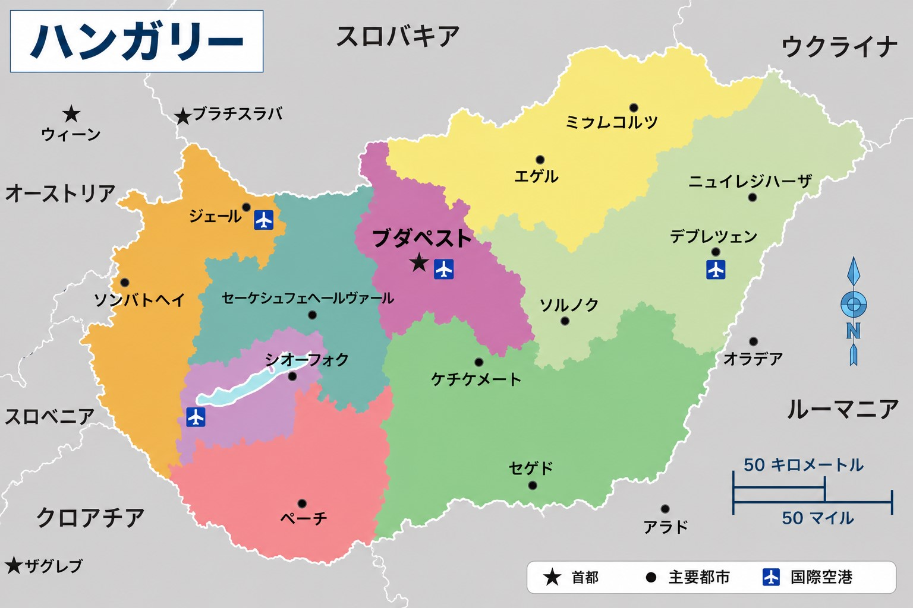

ハンガリーってどんな国？
「どんな国なの？」「安全？」「生活できる？」
留学前に多くの人が気になるポイントを、現役留学生の感覚ベースも含めて整理しています。
まずこれだけ（30秒）
- EU加盟国で、中欧にある国です。
- 首都はブダペスト。留学生も多い都市です。
- 英語だけでも生活は可能ですが、場所によって差があります。
- 日本よりスリは多いですが、普通に生活している留学生も多いです。
- 生活費は西欧より安めですが、近年は上昇傾向です。

① ハンガリーってどんな国？
ハンガリーは、中欧にあるEU加盟国です。
オーストリア、スロバキア、ルーマニア、セルビアなどと接しています。
首都はブダペストで、多くの留学生や観光客が集まっています。 一方で、地方都市にも大学があり、都市によって雰囲気はかなり異なります。
| 項目 | 内容 |
|---|---|
| 首都 | ブダペスト |
| 通貨 |
フォリント（HUF / Ft） 100 Ft ≒ 40 円前後（為替で変動） |
| 公用語 | ハンガリー語 |
| EU加盟 | 加盟済み |
| シェンゲン圏 | 加盟済み |
② 主要な大学都市

ブダペスト
ハンガリー最大の都市で、多くの大学が集まっています。
BME、ELTE、Corvinus、Semmelweis などの有名校があります。
- 英語が比較的通じやすい
- 留学生が多い
- 家賃は高め
デブレツェン
ハンガリー東部の主要大学都市です。
University of Debrecen があり、医学・理系分野を含む留学生も多い都市です。
- ブダペストより落ち着いた雰囲気
- 生活費はやや低め
- 大学中心の街という印象が強い
セゲド
南部にある大学都市で、University of Szeged があります。
- 学生都市の色が強い
- 比較的コンパクト
- 留学生コミュニティもある
ペーチ
南西部の都市で、University of Pécs があります。
- 歴史的な街並み
- 地方都市としては留学生も多い
- 比較的落ち着いた生活環境
③ 治安はどう？

結論から言うと、 ハンガリーは日本ほど安全ではありませんが、 世界的に見れば比較的安全な国です。
注意しやすい場所
- 観光地
- 地下鉄・トラム
- 駅周辺
- 深夜の繁華街
最低限やるべきこと
- バッグを前に持つ
- 財布を後ろポケットに入れない
- スマホを机に置きっぱなしにしない
- 深夜に人気のない道を歩かない
日本・ブダペスト・世界平均の比較データ、 Crime Index や Safety Index の詳細は Guide にまとめています。
④ 英語だけで生活できる？

大学の英語プログラムでは、授業は基本的に英語です。
- 大学内 → 英語で問題ないことが多い
- ブダペスト → 英語が通じやすい
- 地方都市 → 通じにくい場面もある
スーパーや役所、病院などではハンガリー語中心の場面もあります。
ハンガリー国内では手に入りにくい場合があります。
そのため、渡航前に購入しておくことをおすすめします。
⑤ 気候・暮らし
ハンガリーは四季があります。
夏は暑く、冬はかなり寒くなることがあります。
| 季節 | 特徴 |
|---|---|
| 夏 | 30℃を超える日もあります。 |
| 冬 | 氷点下になる日もあります。 |
| 春・秋 | 比較的過ごしやすいです。 |
⑥ 生活費はどれくらい？

ハンガリー留学の費用感は、 「ハンガリー全体」で考えるよりも、 どの都市を選ぶかで見た方が実態に近いです。
ブダペストと地方都市では、 毎月の負担感がかなり変わります。
都市ごとの違い
- ブダペスト → 家賃・生活費ともに高め
- セゲド・ペーチ → 比較的コストを抑えやすい
- デブレツェン → ブダペストより抑えやすい傾向
住まいごとの感覚
- 寮 → 比較的安い
- シェア → 中間
- 一人暮らし → 高くなりやすい
ブダペスト・セゲド・ペーチ・デブレツェンなどの 生活費比較データを Guide にまとめています。
物価（学生がよく買うもの）
読み込み中…
| 品目 | 価格 | 単位 | 備考 |
|---|---|---|---|
| 読み込み中… | |||
※ KSH（ハンガリー中央統計局）の全国平均小売価格を表示しています。
⑦ 奨学金だけで生活できる？

スティペンディウム・ハンガリカムでは、学費免除＋生活支援があります。
- 学費 → 基本免除
- 月額給付 → 約43,700 Ft
- 住居補助 → 約40,000 Ft
ただし、都市や住まいによっては不足する場合があります。